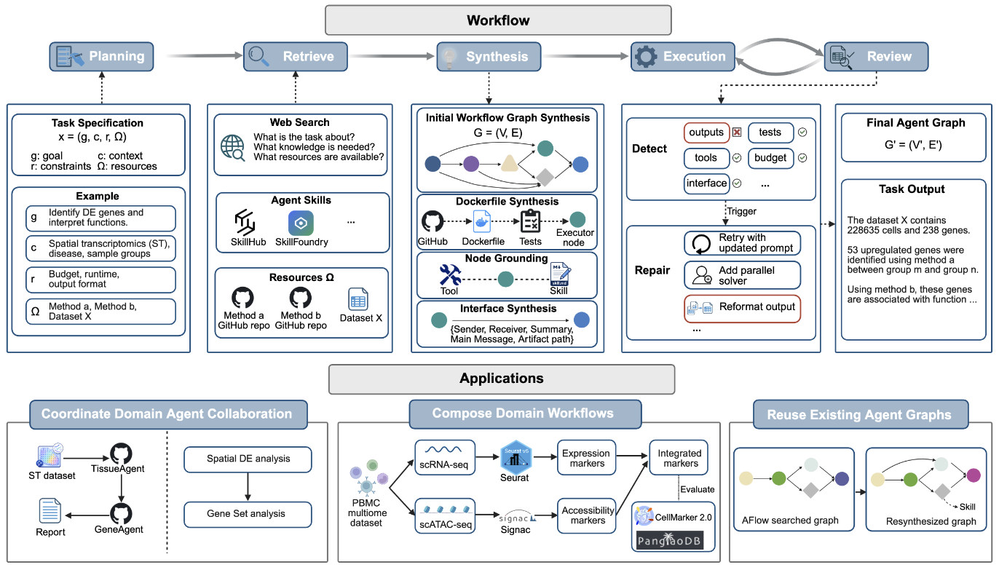
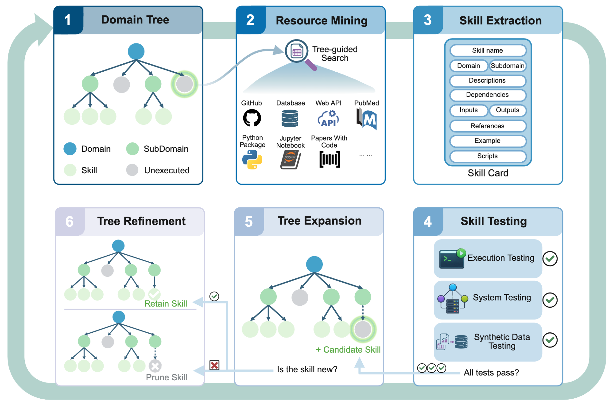
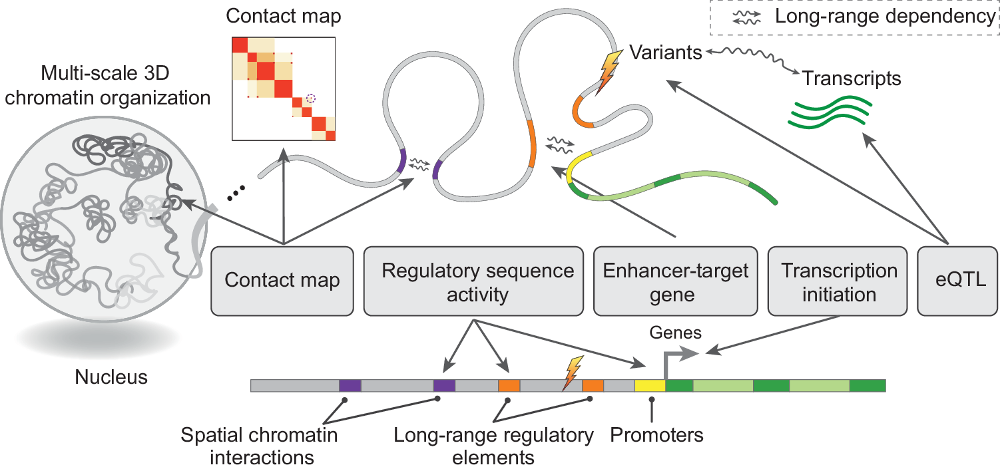
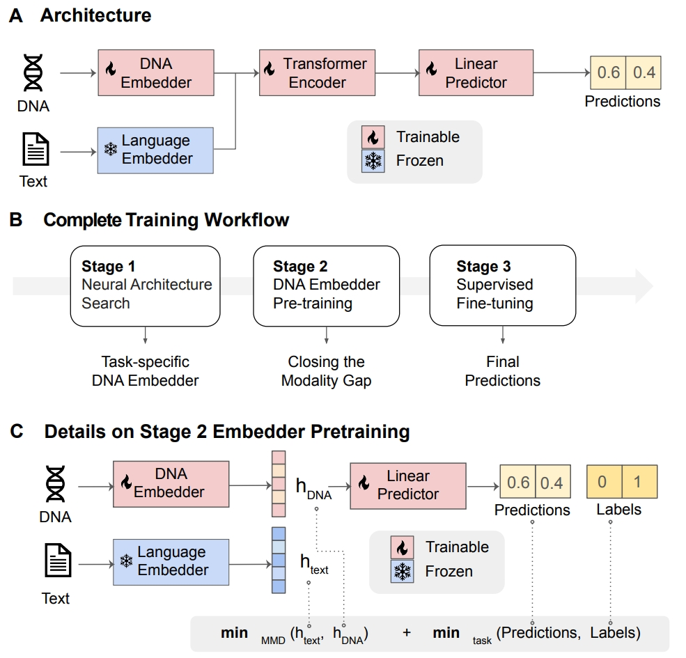
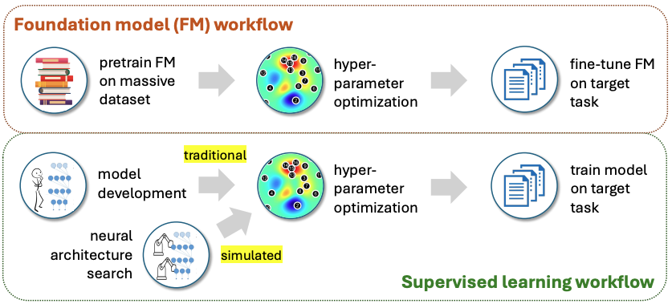
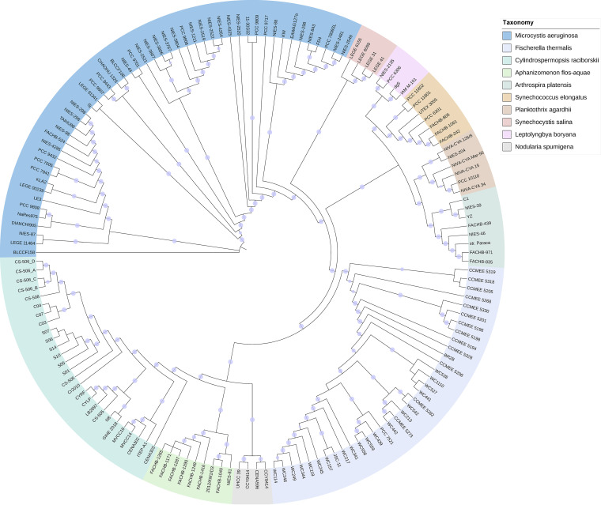

⚠️ Publications preview — check Sort-by dropdown & keyword badges are aligned in one row.
📝 Selected Publications
A full list of publications is available
here
. († indicates equal contribution.)
Sort by:
Time (Newest)
Time (Oldest)
Name (A-Z)
Name (Z-A)
·
genomic foundation model
agent
No publications match your search.

AgentCo-op: Retrieval-Based Synthesis of Interoperable Multi-Agent Workflows
Shuaike Shen
†
,
Wenduo Cheng
†
, Shike Wang, Mingqian Ma, Jian Ma
arXiv preprint
arXiv:2605.20425, 2026.
Paper
Code
Project Page

SKILLFOUNDRY: Building Self-Evolving Agent Skill Libraries from Heterogeneous Scientific Resources
Shuaike Shen
†
,
Wenduo Cheng
†
, Mingqian Ma, Alistair Turcan, Martin Jinye Zhang, Jian Ma
Conference on Language Modeling (COLM)
, 2026.
Paper
Code
Project Page

DNALONGBENCH: A Benchmark Suite for Long-Range DNA Prediction Tasks
Wenduo Cheng
†
, Zhenqiao Song
†
, Yang Zhang
†
, Shike Wang, Danqing Wang, Muyu Yang, Lei Li, Jian Ma
Nature Communications
16, p.10108, 2025. Editors' Highlights.
Paper
Code

L2G: Repurposing Language Models for Genomics Tasks
Wenduo Cheng
, Junhong Shen, Mikhail Khodak, Jian Ma, Ameet Talwalkar
Transactions on Machine Learning Research (TMLR)
, 2025.
Paper
Code

Specialized Foundation Models Struggle to Beat Supervised Baselines
Zongzhe Xu, Ritvik Gupta,
Wenduo Cheng
, Alexander Shen, Junhong Shen, Ameet Talwalkar, Mikhail Khodak
International Conference on Learning Representations (ICLR)
, 2025.
Paper
Code

Cyanobacterial Blooms Are Not a Result of Positive Selection by Freshwater Eutrophication
Yang Yu
†
,
Wenduo Cheng
†
, Xiaoyuan Chen, Qisen Guo, Huansheng Cao
Microbiology Spectrum
12(3), e03194–22, 2022.
Paper
×